Кадры для сайта
Отобранные кадры: 29. Номера прежние, по ним удобно говорить, какой кадр куда поставить. Под подписью - имя файла и где кадр уже стоит на главной (v4). Нажми на кадр, чтобы открыть его крупно; стрелки листают, Esc закрывает.
1 Су-34 сбоку, закат01-su34-side-sunset.webp · сейчас: галерея 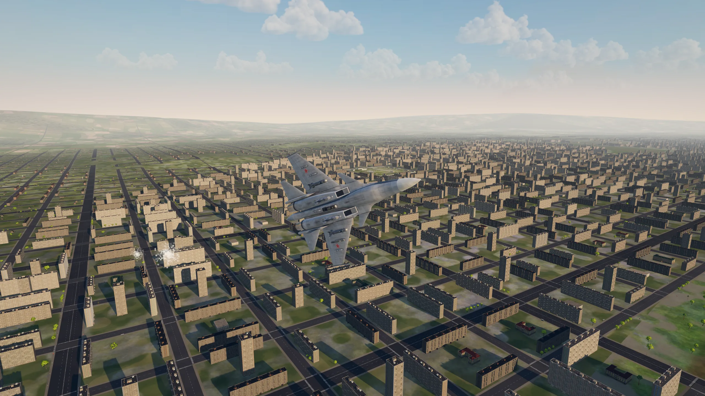
2 Су-30СМ спереди, утро02-su30-front-morning.webp 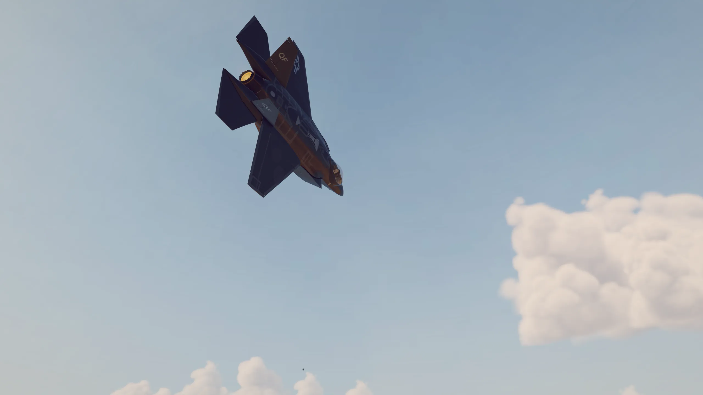
4 F-35A снизу, вечер04-f35-below-evening.webp 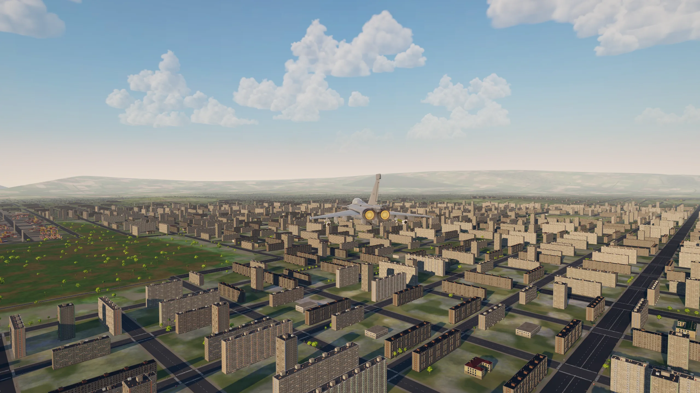
5 Rafale сзади низко над городом05-rafale-chase-morning.webp 6 F-15E спереди, закат06-f15e-front-sunset.webp · сейчас: галерея 8 B-2A над городом, пасмурно08-b2-below-overcast.webp · сейчас: галерея 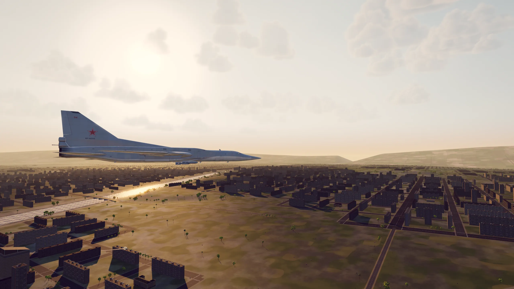
10 Ту-22М3 сбоку, вечер10-tu22m3-side-evening.webp · сейчас: галерея 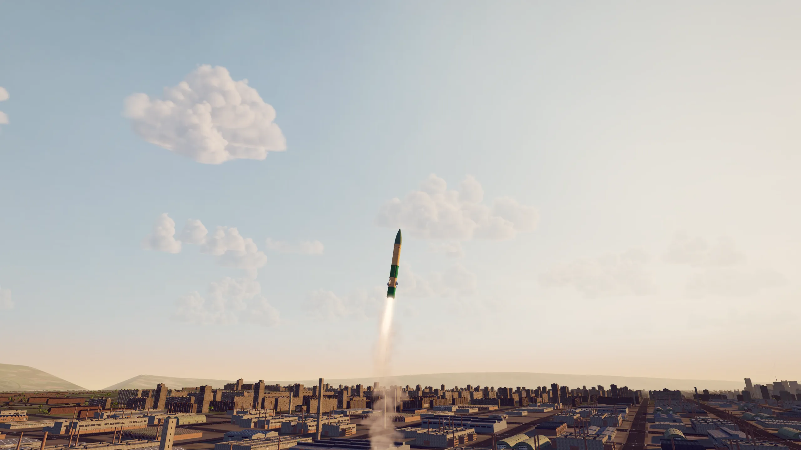
12 Пуск С-400, вечер12-s400-launch-evening.webp · сейчас: галерея 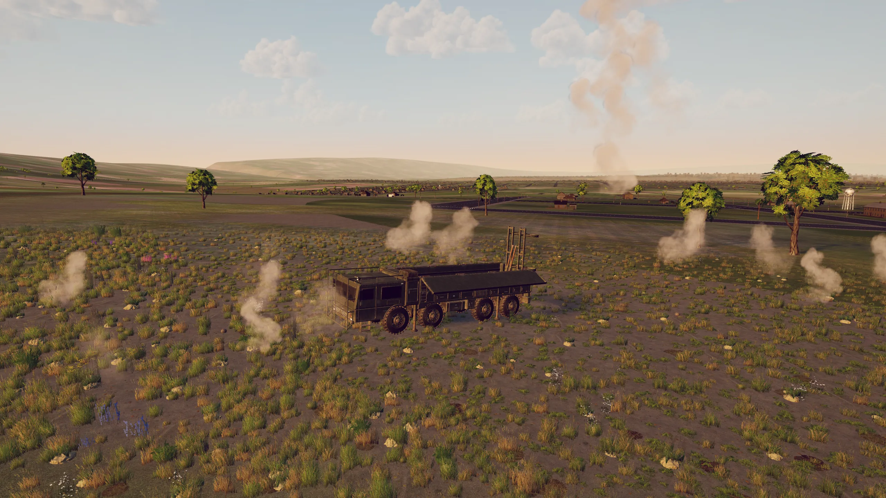
17 Пусковая «Искандер-М», вечер17-iskander-evening.webp · сейчас: Мульти-волна 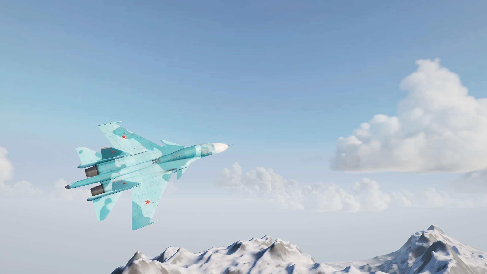
19 Су-34: ФАБ-500 с УМПК над горами19-su34-umpk-clear.webp · сейчас: галерея 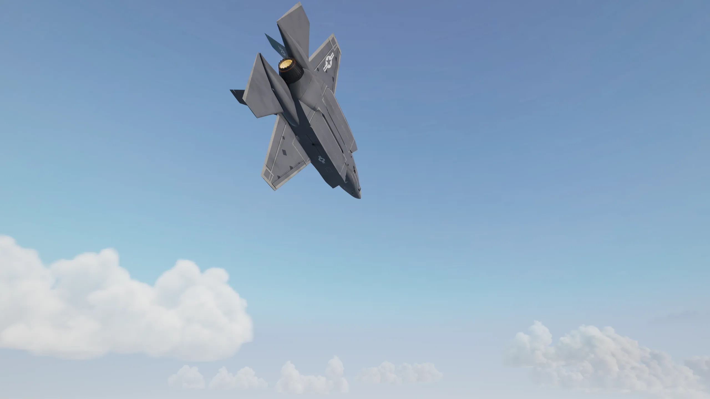
20 F-35A снизу, ясно20-f35-below-clear.webp 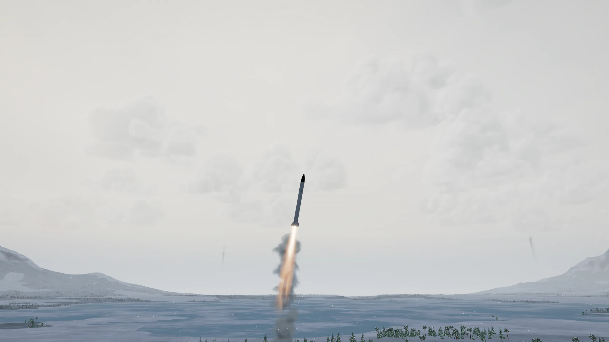
22 Пуск С-300, снегопад22-s300-snow.webp 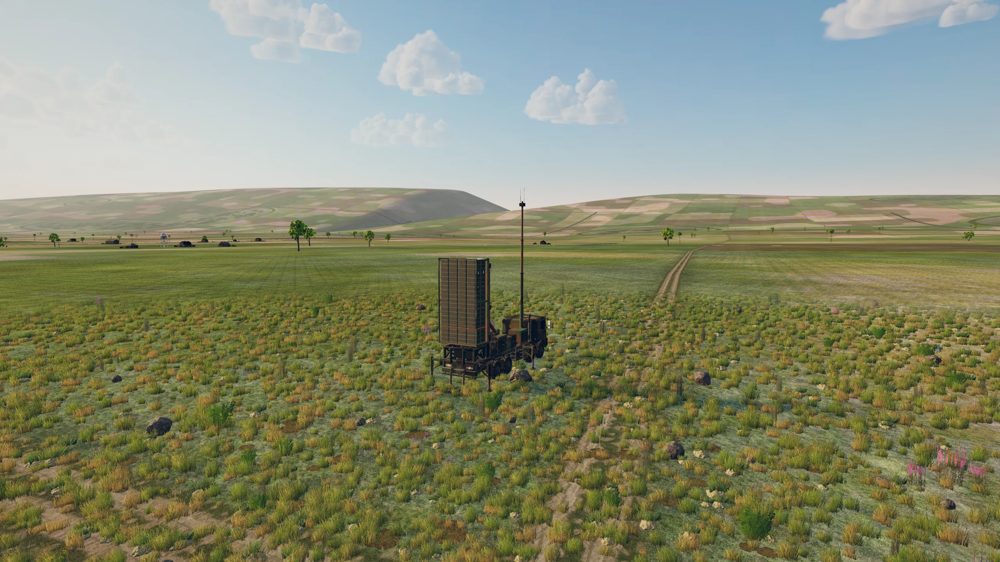
29 SAMP/T развёрнут, утро, крупно29-sampt-close-morning.webp · сейчас: Оборона 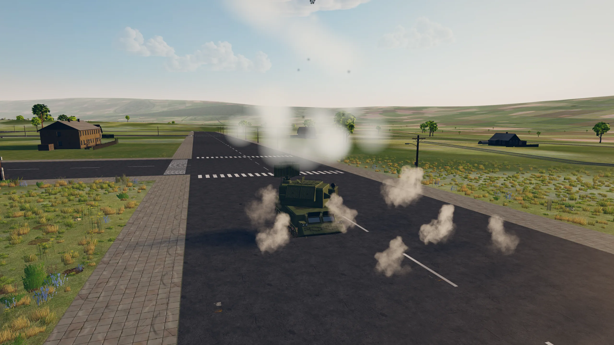
33 Тор-М2, утро, крупно33-torm2-close-morning.webp 36 Бук-М1 в горах, крупно36-buk-close-clear.webp · сейчас: галерея 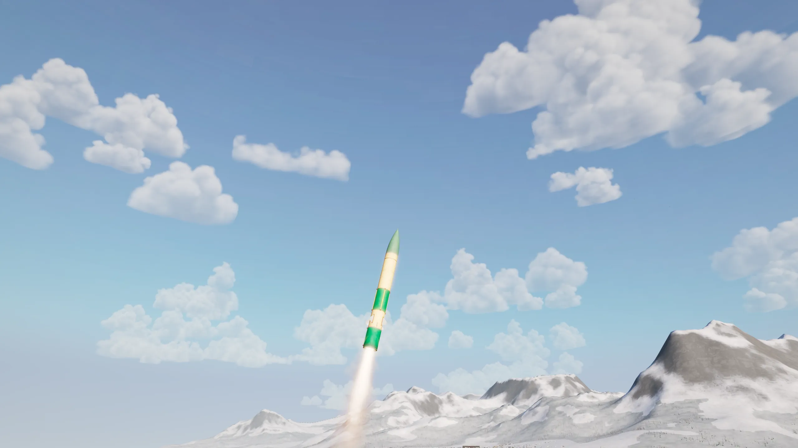
40 Пуск С-400 вблизи, горы40-s400-launch-close.webp · сейчас: галерея 41 SAMP/T развёрнут, утро (камера рядом)41-sampt-cam-morning.webp · сейчас: галерея 43 С-400, вечер (камера рядом)43-s400-cam-evening.webp 44 Patriot, пакет поднят (камера рядом)44-patriot-cam-day.webp · сейчас: галерея 49 NASAMS в снегу (камера рядом)49-nasams-cam-clear.webp 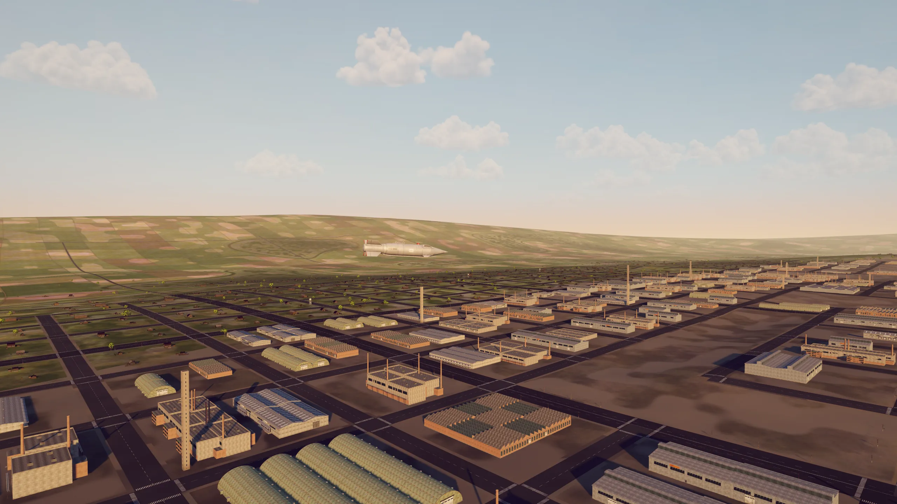
50 Су-34 сбрасывает КАБ-500С50-g-su34-kab500s.webp · сейчас: Вылет 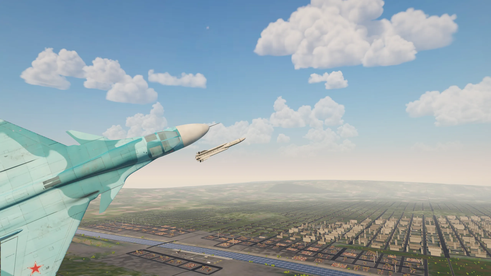
51 Су-34 пускает Х-31П по РЛС51-g-su34-kh31p.webp · сейчас: галерея 52 Су-30СМ: КАБ-500Л уходит к цели52-g-su30-kab500l.webp · сейчас: галерея 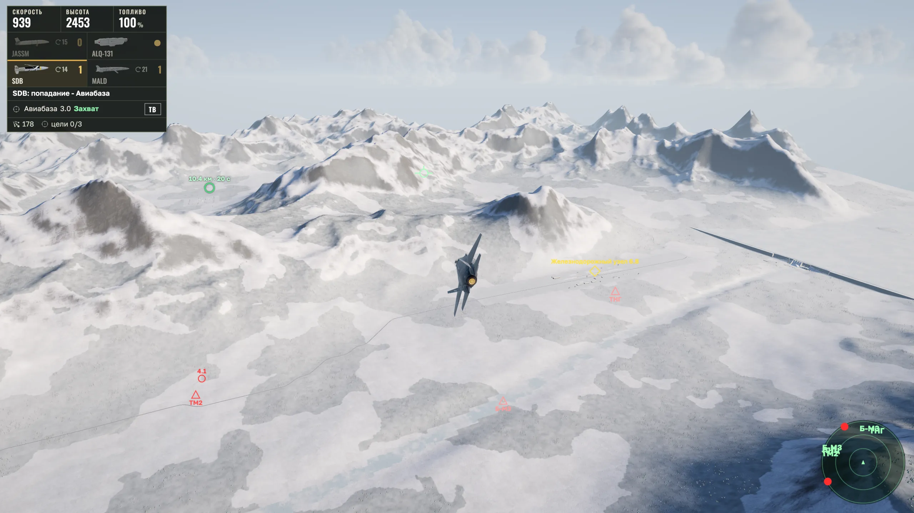
57 F-35A с интерфейсом боя57-g-f35-hud.webp · сейчас: галерея 60 Цель удара60-g-su34-tgt.webp · сейчас: первый экран 65 Самолёт налёта над позицией С-30065-g-s300-plane.webp · сейчас: галерея 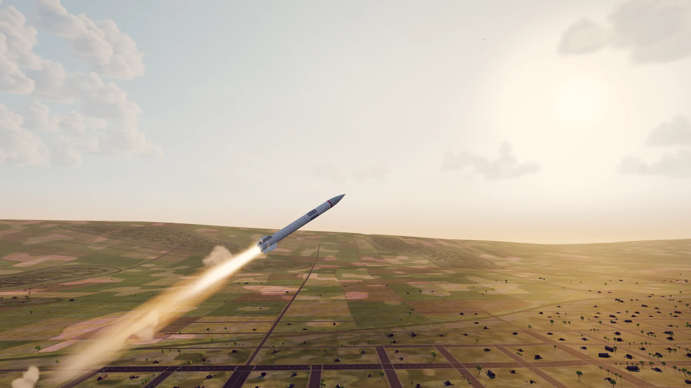
67 Пуск Patriot вблизи, вечер67-g-patriot-launch-close.webp · сейчас: галерея 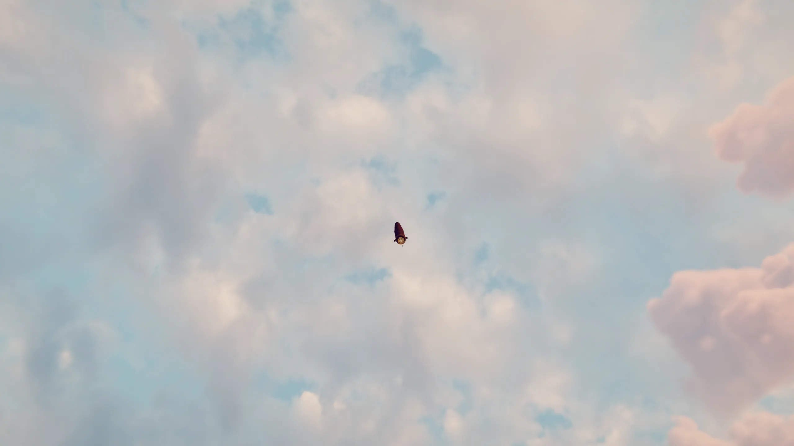
73 «Искандер» в полёте, закат73-g-iskander-flight.webp 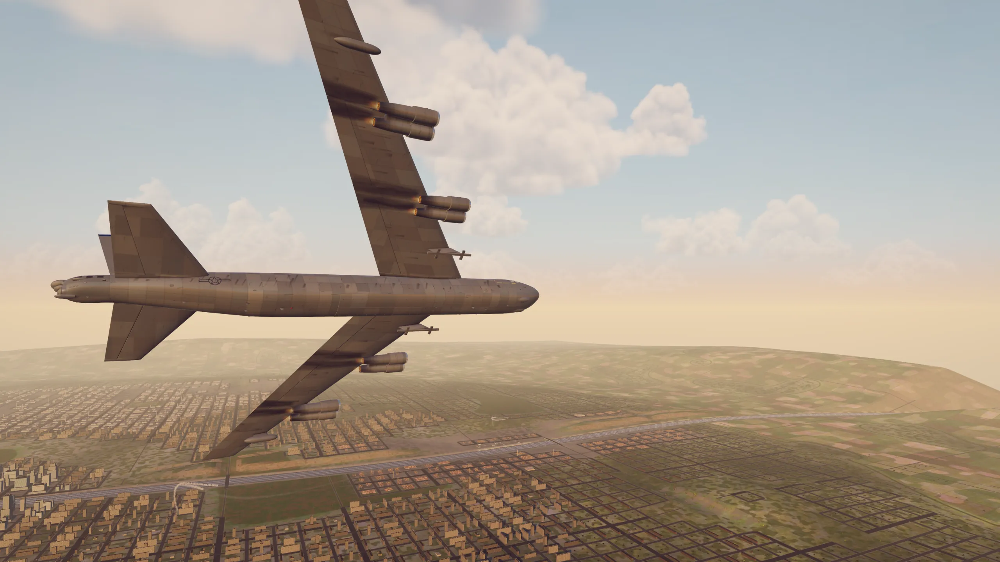
76 B-52H над городом, вечер76-g-b52-side.webp · сейчас: галерея